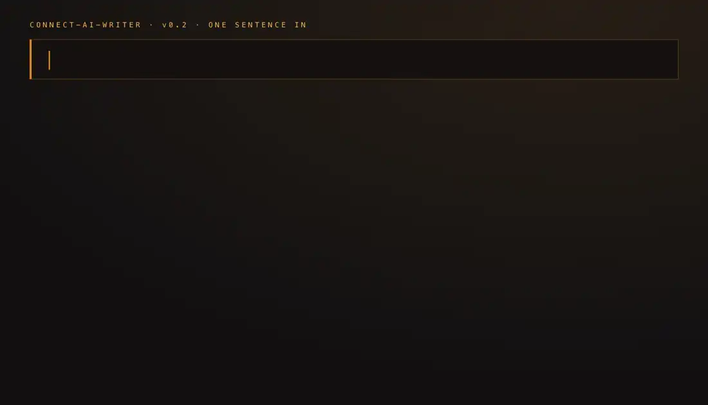
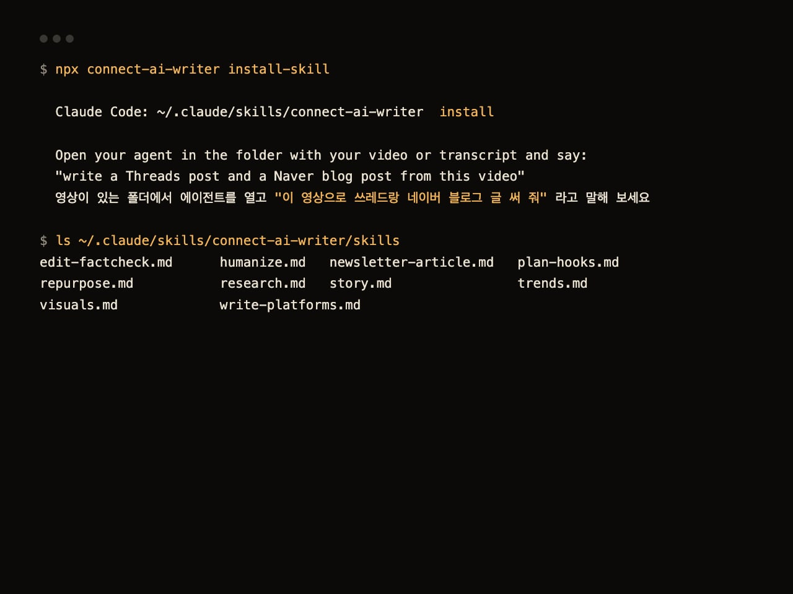
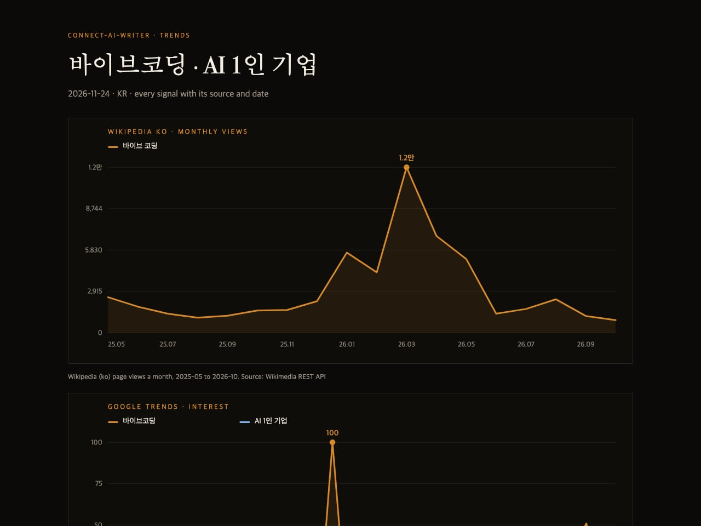
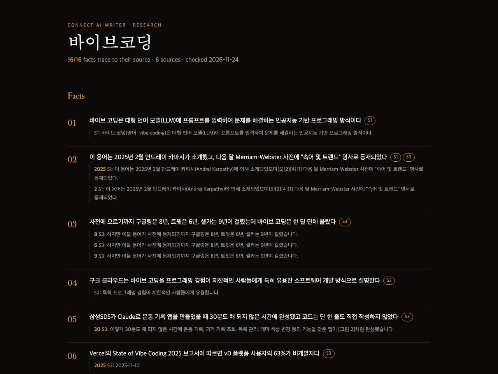
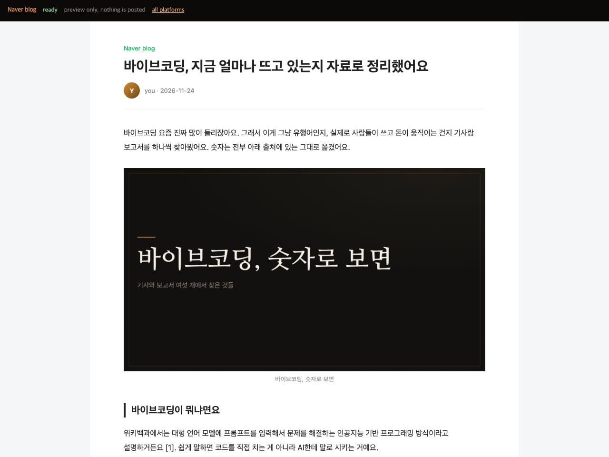
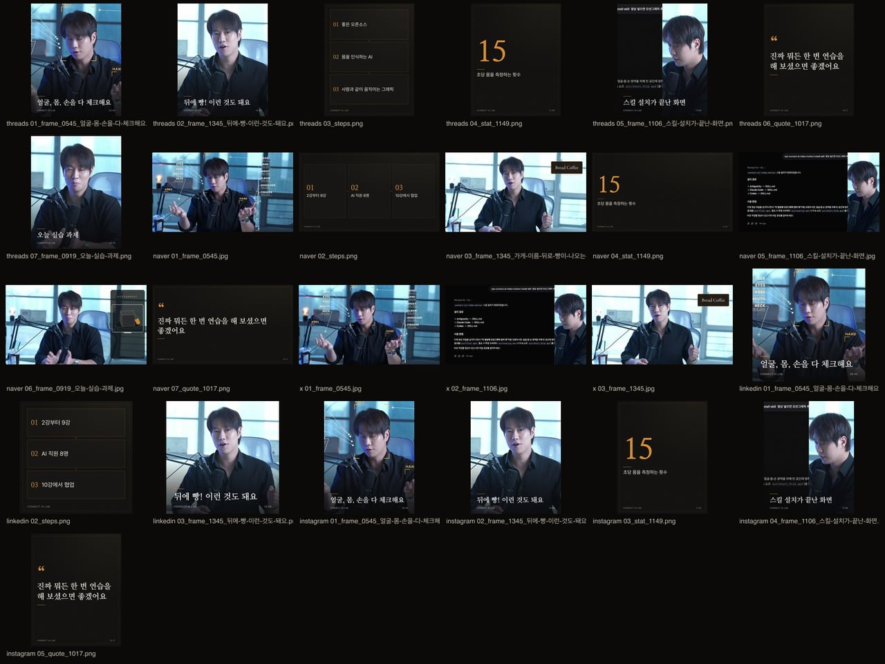
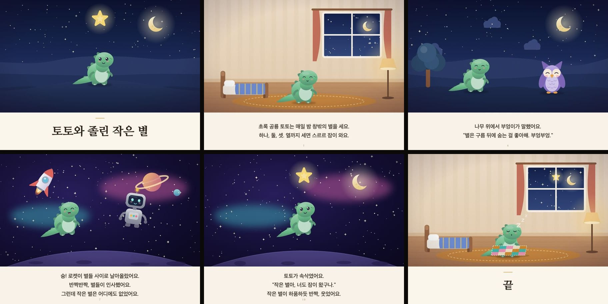
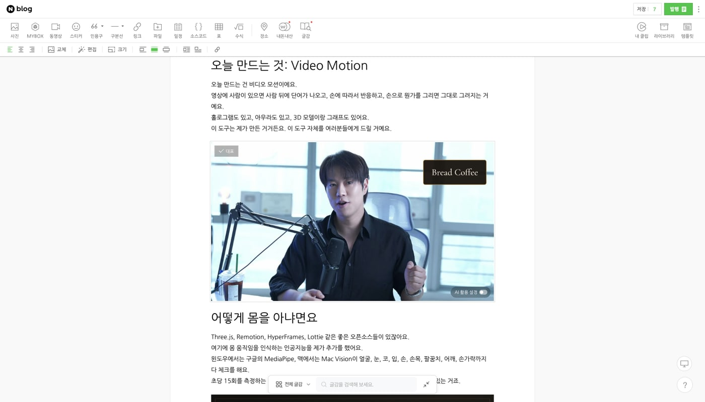

CONNECT AI LAB · THE WRITING EMPLOYEE · TEXTBOOK
One sentence in. A post out.
한 문장이면
글이 나와요
블로그 글 하나 쓰려면 할 게 많잖아요. 요즘 뭐가 뜨는지 찾아야 되고, 자료 찾아야 되고, 내 말투로 써야 되고, 사진도 만들어야 되거든요. 이걸 AI 글쓰기 직원 하나한테 다 넣어 놨어요. 아래 프롬프트 8개를 순서대로 복사해서 에이전트한테 붙여 넣기만 하시면 돼요.

01 · WHAT YOU MAKE TODAY
오늘 만들 것
- 1내 영상 자막으로 만든 내 말투표
- 2요즘 뜨는 주제, 그리고 출처가 하나하나 붙은 자료 정리
- 3쓰레드, 네이버 블로그, 인스타 글이랑 사진. 같은 글로 모션그래픽 영상까지
- 4우리 아이 그림책 동화 한 권, 인쇄용 PDF로
- 5AI 티 안 나게 고친 글, 그리고 네이버 블로그 임시저장
02 · STEP BY STEP
따라 하기
준비물
- Node.js 20.9 이상 (터미널에
node -v쳐 보시면 돼요) - 코딩 에이전트 하나: Claude Code, Codex, Antigravity, Cursor 중에 아무거나
- 크롬 (그림 만들 때 써요. 따로 받는 건 없어요)
- Ego Lite (8단계 임시저장할 때만. 없어도 나머지는 다 돼요)
AI 글쓰기 직원 데려오기
에이전트한테 이렇게 말하세요.
npx connect-ai-writer install-skill 실행해 줘
"Ok to proceed?" 하고 물어보면 y 라고 답하면 돼요. 끝나면 새 대화를 여세요. npm에 아직 안 올라가 있으면 npx github:wonseokjung/connect-ai-writer install-skill 으로 해도 똑같이 깔려요.

내 말투표 만들기
AI가 쓴 글이 어색한 이유가 내 말투가 아니라서거든요. 그래서 제일 먼저 내 영상 자막으로 내가 실제로 어떻게 말하는지 세어 봐요.
이 폴더에 있는 내 영상 자막(.srt) 전부로 내 말투표 만들어 줘. connect-ai-writer voice 로 하고 voice.md 로 저장해 줘.

요즘 뜨는 주제 찾기
요즘 뜨는 주제 찾아 줘. "바이브코딩" 이랑 "AI 1인 기업" 으로. 출처랑 날짜 꼭 붙이고, 글감 후보도 뽑아 줘.
구글 트렌드, 구글이랑 유튜브랑 네이버 검색어 자동완성, 위키백과 조회수를 키 없이 봐요. Ego Lite가 있으면 X, 쓰레드도 읽기만 해서 같이 보고요. 네이버 데이터랩은 내 키를 넣었을 때만 켜져요.

출처 붙여서 자료 조사하고, 그걸로 블로그 글
바이브코딩 자료 찾아서 정리해 줘. 기사랑 보고서로 찾고, 사실마다 어느 출처에서 왔는지 붙여 줘. 다 하면 research check 로 확인까지.

방금 정리한 자료로 네이버 블로그 글이랑 쓰레드 글 써 줘. 내 말투표(voice.md) 보고 쓰고, 숫자는 자료에 있는 그대로만.

영상 하나로 쓰레드, 블로그, 인스타. 모션그래픽 영상까지
이 영상으로 쓰레드, 네이버 블로그, 인스타 글 써 줘. 사진은 영상에서 뽑아서 같이 만들고, 내 말투표 보고 써 줘.

이 쓰레드 글로 모션그래픽 영상도 만들어 줘. connect-ai-writer motion --render 로 하고, 세로랑 가로 둘 다.
이건 우리 다른 AI 직원 connect-ai-motion 이 만들어요. 안 깔려 있으면 npx connect-ai-writer engines 하면 받는 법이 나와요.

우리 아이 그림책 동화
우리 아이 잠자리 동화 써 줘. 7살이고 공룡 좋아해. 그림책으로 만들어서 PDF까지.
한 쪽에 한 장면, 글에 나온 건 그림에도 나오게, 마지막은 교훈 말고 첫 장면으로 돌아오게. 이런 그림책 규칙을 직원이 알아서 검사해요. 그림은 코드로 그린 동물이랑 물건만 써요. 사람은 안 그려요.

AI가 쓴 티 지우기
이 글 AI가 쓴 티 안 나게 고쳐 줘. 내 말투표대로 쓰고, 숫자는 하나도 바꾸지 마. 고친 다음에 humanize --after 로 전후 비교까지.

Ego Lite로 임시저장까지만
네이버 블로그 글 Ego Lite로 글쓰기 화면에 넣고 임시저장까지만 해 줘. 발행은 내가 할게.
직원은 절대 혼자 안 올려요. 로그인도 안 하고, 비밀번호도 안 쳐요. 로그아웃돼 있으면 Ego Lite에서 직접 로그인하시면 돼요.

03 · IF YOU GET STUCK
막히면
- 그림이 하나도 안 나와요
- 크롬이 있어야 그림을 만들어요.
npx connect-ai-writer doctor해 보시면 뭐가 빠졌는지 나와요. - 검사에서 숫자 때문에 막혀요
- 출처에 없는 숫자라서 그래요. 규칙을 끄지 말고 글을 고치세요.
check --trace하면 숫자마다 어디서 왔는지 보여 줘요. - 트렌드에 구글 관심도가 비어 있어요
- 구글이 잠깐 막을 때가 있어요. 조금 있다가 다시 해 보세요. 나머지 신호는 그대로 나와요.
- 네이버가 작성 중인 글을 이어서 쓸지 물어봐요
- 그건 내 글이라서 직원이 대신 안 골라요. Ego Lite 열어서 확인이나 취소를 직접 누르고 다시 시키세요.
- 모션그래픽 영상이 안 만들어져요
- connect-ai-motion 이 깔려 있어야 돼요.
npx connect-ai-writer engines로 확인해 보세요.
04 · ASSIGNMENT
과제
내 영상 하나로 말투표 만들고, 요즘 뜨는 주제 하나 골라서 자료 조사부터 네이버 블로그 임시저장까지 해 보세요. 아이가 있으시면 동화도 한 권 만들어 주시고요.
다 하시면 결과 폴더의 index.html 이랑 sheet.jpg 를 캡처해 두세요. 내 말투로 나왔는지, 숫자가 다 출처에 있는지 그 두 개만 보시면 돼요.
CONNECT AI LAB